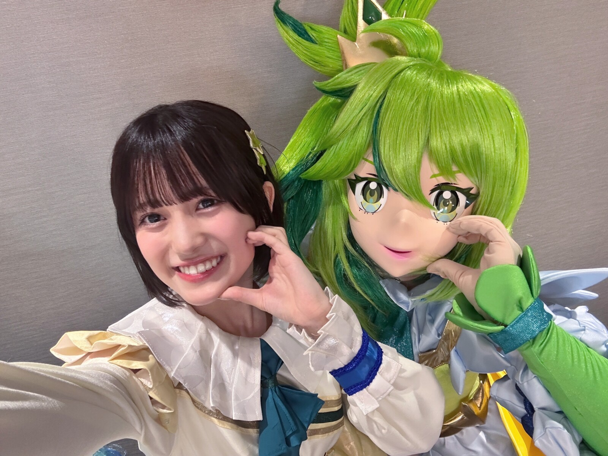

橘杏咲の立ち話もなんですから！ 第14回橘杏咲的“站着聊可说不完！” 第14回
皆さん、こんにちは！
大家好！
9月になりましたね。暦の上では秋ですが、日中はまだまだ暑い…。大学も夏休みの真っ最中なので、なんとなくまだ夏の空気の中にいるような感覚で過ごしています。というか、夏ですよね。全然。皆さんはいかがお過ごしでしょうか？🌻🍉
已经9月了呢。虽然日历上已经是秋天，但白天依然好热……大学也正值暑假期间，所以不知怎么地，每天过着过着总感觉还身处夏天的氛围里。不如说，这根本就还是夏天嘛。大家最近过得怎么样呢？🌻🍉
私はというと、7月末から8月にかけては怒涛の日々でした…。まずは大学の期末試験と最終課題！！これが本当に、容赦なく私を襲ってきました。期末試験の勉強に加えてレポートやプレゼン課題が降りかかってきて。毎日一つ終わったら次、で気が気じゃなかったです。
至于我呢，从7月底到8月简直度过了一段波涛汹涌的日子……首先是大学的期末考试和结课作业!! 它们真的毫不留情地朝我袭来。除了复习期末考，还有报告和展示发表（Presentation）作业接踵而至。每天刚搞定一个就得接着应付下一个，弄得我一刻也静不下心来。
勉強とは関係なくやりたいこと、例えば読書やアニメ鑑賞なども、課題提出が後に控えているとやる気も失ってしまうんですよねぇ。
那些跟学习无关、本来自己想做的事，比如看书或者追番什么的，一想到后面还压着要交的作业，也就提不起劲儿了呀。
でも、なんとか全部提出できた！と分かった瞬間のあの解放感は言葉にできないくらいの爽快感と達成感がありますよね。とりあえず、大学関係のものを全て提出し終えた直後は、あり得ないほど寝ました。
不过，在确认“好歹全部交上去了！”的那一瞬间，那种解放感带来的爽快和成就感真是难以言表呢。总之，把大学相关的事情全部交完之后，我立刻睡了个天昏地暗、不可思议地大睡了一通。
睡眠、やはり至福💤
睡眠，果然是人间至福💤
休息を終えてからは、春学期中にやりたくても出来なかったことをしたり、おでかけをしたりと、まったり夏休みをエンジョイしています。
好好休息过后，我就去做了些春季学期里想做却没空做的事，也出去逛了逛，正悠哉悠哉地享受暑假中。
でも、夏らしいことはあまり出来ていないかも…！悔しい！！まぁ、まだ夏休みなのでセーフです。後1ヶ月、少しだけも夏らしいことをしてみよう。
不过，好像还没怎么做过什么有夏天感觉的事呢……！好不甘心!! 嘛，反正还在放暑假，不算晚！接下来还有1个月，哪怕一点点也好，去体验些有夏日气息的事吧。
まだ成績が出ていないので安心はできませんが、とりあえず乗り越えた！という気持ちでいっぱいです。本当に良く頑張った自分✨残りの夏休みは存分に好きなことをやって自分を甘やかしてあげるんだ！！
虽然成绩还没出，还不能完全放下心来，但心里满是“总算熬过来了！”的念头。自己真的超努力的✨ 剩下的暑假要尽情做喜欢的事，好好宠宠自己!!
8月の大きな出来事といえば、やはり「プリンセッション・オーケストラ Firstイベント『DREAM SESSION』」です！
说起8月的大事件，果然还是《Princession Orchestra》First Event“DREAM SESSION”！
初めての単独イベントということで、本当にドキドキしていたのですが、ステージに立った瞬間に見えた客席の皆さんの表情を見て、一気に不安が吹き飛びました。プリオケを知っているたくさんの方々が一堂に会するのは初めてで、どんな雰囲気になるのか予想がつかなかったのですが、最高に温かい幸せ空間でしたね！！💕
因为是第一场单独活动，我本来紧张得心怦怦直跳，但站上舞台的那一瞬间，看到台下观众席里大家的表情，不安一下子就烟消云散了。这么多了解《Princession Orchestra》的朋友们齐聚一堂还是头一回，之前根本想象不出会是什么样的氛围，结果却是一个温暖到极致的幸福空间呢!!💕
初めて、プリオケを好きな小さなお友達にも会えて！！嬉しかったです。昼の部でじゃんけん3回連続で勝ってたのに4回目で負けちゃってとっても悔しがってた小さなミーティア推しのきみ、悔しくて泣いちゃったのにすぐに泣き止んでて偉かったね…💫♡
而且我还第一次见到了喜欢《Princession Orchestra》的小朋友们!! 好开心啊。昼场猜拳连赢了三局、结果第四局输掉而不甘心到不行的小小 Meteor 推，虽然委屈得哭了出来，但很快就不哭了，你真棒呢……💫♡
みんなの視線や空気が、同じものを愛している仲間なんだと伝えてくれて…一体感に包まれた最高のイベントでした！！ステージ上にいる時は、まるでワクワクをそのまま背負っているような感覚で。本番を終えた後は、ワクワクがホクホクに変わって、とにかく楽しいという気持ちで心が埋め尽くされていました。幸せだったな〜！
大家的眼神和现场氛围都在传递着“我们是爱着同一部作品的伙伴”……真是被满满一体感包围的最棒的活动!! 站在舞台上时，感觉就像把满腔的雀跃直接背在了身上；正式演出结束后，那份雀跃又化作了暖融融的满足感，心里被“实在太开心了”的心情填得满满当当。好幸福啊〜！
皆さんからいただいたフラスタやお手紙、プレゼントも全て拝見させていただきました！お手紙やプレゼントは私のおうちで大切に、フラスタは私の瞳のカメラロールとスマホのカメラロールにしっかり保存されています。一つ一つが愛に溢れていて、その愛をゆーっくり噛み締めながら見させていただきました！💓
大家送来的祝贺花篮、信件和礼物我也全都认真看过啦！信和礼物都好好珍藏在我家里，祝贺花篮则牢牢保存在我眼眸的相册和手机的相册里了。每一份都洋溢着满满的爱，我一边细细品味着这份爱意一边全部看完了哦！💓
毎度のことですが、皆さんからの贈り物を受け取らせていただくたび、これからも頑張ろう！と奮い立たせられています。私の原動力です！日頃沢山の愛をいただいているので、その分、いやそのうん倍お返しできるように頑張ります〜！！改めて、いつもありがとうございます！！
每次都是这样，每当收到大家送来的心意，就会被鼓舞着想“今后也要继续加油！”。这就是我的原动力！平时一直承蒙大家这么多的爱，为了能把这份爱——不，是这份爱的无数倍回馈给大家，我会努力的〜!! 再次感谢大家一直以来的支持!!

12月21日(日)にKAAT 神奈川芸術劇場にて、プリオケ2ndイベントの開催も決定しております！！ゼッタイ参戦宣言ッ！待ってます🎶
12月21日（周日）在 KAAT 神奈川艺术剧场举办《Princession Orchestra》2nd Event 的消息也已经正式公布啦!! 等着大家的“绝对参战宣言！”哦🎶
さらに！「ちゃおサマーフェスティバル2025」にも出演させていただきました。
不仅如此！我还登上了“《Ciao》夏日祭2025（ちゃおサマーフェスティバル2025）”的舞台。
子どもの頃から読んでいた雑誌の名前を冠したイベントに、自分が出演者として立っているなんて信じられない気持ちで。会場の雰囲気もキラキラしていて、可愛いものや夢がたくさん詰まっていて、その中に自分が存在できていることが本当に嬉しかったです。
一想到自己竟然以出演者的身份，站在冠有从小读到大的杂志之名的活动舞台上，就觉得难以置信。会场的氛围也闪闪发亮，装满了可爱的东西和梦想，能置身于其中真的让我无比开心。
たくさんの小さなお友達にプリオケの音楽を届けられたこともとにかく嬉しかったです！やっと1人で座れるようになったであろう小さな女の子たちもナビーユのサンバイザーをつけて、ペンライトを振りながら音楽を楽しんでくれていて。
能把《Princession Orchestra》的音乐带给这么多小朋友，也让我开心得不得了！连看起来刚学会自己坐稳的小女孩们，也戴着纳比尤的遮阳帽，挥舞着荧光棒开心地欣赏着音乐。
烏滸がましいですが、こどもたちに夢を与えることのできる存在になれているのかなと感じ、目頭がジンときました。
虽然这样说或许有些僭越，但那一刻我觉得自己是不是也成为了能给孩子们带去梦想的存在，眼眶不禁一热。
小さい頃の私に教えてあげたいですね。
真想告诉小时候的自己啊。
「大人になったらちゃおフェスに出るんだよ！」って。笑
告诉她：“你长大以后可是会登上《Ciao》祭舞台的哦！”（笑）
まだまだライブへの出演は数多くありませんが、出演させていただくたびに終わった後は「もっとステージに立ちたい！」と感じています。ライブってやっぱり魔法みたいな時間だなぁと改めて実感しますね。
虽然我出演 Live 的经验还不算多，但每次演完之后，都会觉得“还想更多地站上舞台！”。这也让我再次深切体会到，Live 果然是一段宛如魔法般的时光呢。
もっともっと上手にパフォーマンスできるようになりたいなぁ〜！！😼
真想把舞台表演练得越来越好呀〜!!😼
そしてここからはちょっと日常の話。
接下来稍微聊聊日常。
実はこの夏、ついにたまごっちパラダイスを購入しました。小さい頃にハマっていたあの感じがそのまま蘇ってきて、おうちでも移動中でもごはん食べさせなきゃ！🍚おやつあげなきゃ！🍪とソワソワ。あのちょっとしたお世話が意外と癒やしになっていて、最近の私の小さな楽しみになっています。
其实这个夏天，我终于入手了“拓麻歌子天堂（Tamagotchi Paradise）”！小时候沉迷其中的那种感觉瞬间原封不动地涌了上来，不管是在家还是出门路上，都会坐立不安地想着“得给它喂饭了！🍚”“得给它吃零食了！🍪”。这种小小的照料意外地很治愈，成了我最近的小乐趣。
けれど、今回はたまシッターさんという方がいて、朝から夕方まで預けられるので無駄にソワソワしなくて良いのでとても助かっています。うちの子たち、健やかに育ちなさい。
不过呢，这一代有位叫“拓麻保姆（たまシッター）”的角色，可以从早到晚帮忙托管，不用白白提心吊胆，真是帮了大忙。我家的宝贝们，要健健康康地长大哦。
友人に布教した甲斐もあって周りの人間のたまごっち所持率が高いので、つーしんしやすくて楽しいです。明後日もとある子たちとたまごっちを持ち寄ってつーしんをするんだ〜、ワクワク。
多亏了我四处向朋友们安利，身边人的拓麻歌子持有率超高，随时都能联机通信，特别好玩。后天我还要和几位朋友各自带上拓麻歌子聚在一起联机呢〜好期待呀。
そういえば、たまごっちの一番くじも引きましたよ！！お目当てのC賞てんしっちのたまごっちミラーコンパクトをゲット出来て、ご満悦な橘でした。しかも、5回引いてそのうち2つがこれだったんです！しかもラスト2つ！ピンクは私の、そして白は妹にあげました。いやぁラッキーがすぎる😸🤍
说起来，我还去抽了拓麻歌子的一番赏哦!! 成功拿到了心心念念的 C 赏“天使拓麻歌子便携镜盒”，让橘某人心满意足。而且抽了5次居然中了两个！还是最后仅剩的两个！粉色的归我，白色的送给妹妹了。哎呀，这运气简直好过头了吧😸🤍
後の3回は一つもダブらず、しかもラバストは小さい頃好きだったラブリっちとメロディっちのもので…。なんてラッキーなんでしょうか。
另外3次也一个都没重复，而且橡胶挂件抽到的竟然是我小时候最喜欢的甜心吉（ラブリっち）和美乐蒂吉（メロディっち）……这也太幸运了吧。
なんか、最近運が輪をかけて良い気がするんです。昔から運が良い自信はあるのですが、最近増している気がしなくもない！実は運が良いって自分で思い込むの、結構良いんじゃないかと思ってます。自分で運が良いと思い込んでいると、なんだか身に起こるラッキーな事象が大小関わらず目立って見える気がしています笑
总觉得我最近的运气好得更上一层楼了。虽然我从小就对自己的运气很有自信，但最近似乎又变强了也说不定！其实我觉得，在心里深信自己运气很好，说不定是个挺不错的做法呢。只要自己笃定自己运气好，总觉得发生在身上的幸运小事不管大小都会变得格外显眼（笑）。
運は所詮運ですから、良いも悪いもないかなとは思ってしまうのですが、割合で見たら良いことの方が多い気がするならば、それを運が良いとしていいと思うんです。でも、それも結局は主観ですから、良いと思い込んでおけば気持ちもハッピー！なんか運良い！人生楽しい！になる、みたいな…笑笑
虽然我也会觉得，运气说到底只是运气，本没有什么好坏之分；但从比例上看，如果觉得好事占多数，那把它算作“运气好”也没什么不行吧。不过这也终究是主观感受，所以只要坚定地相信自己运气好，心情也会变得超开心！就会变成“感觉我运气挺好的！人生真快乐！”这样子……（笑笑）。
何が言いたいかというと、良いことを考える思い込みって意外とメンタル安定剤になりますし、人生ハッピー剤になりますよ。と言うことです！笑 あくまで私の考えですけどねっ！
总之我想说的是，往好的方向去自我暗示，意外地既能当心态稳定剂，又能当人生快乐剂哦！就是这个意思！（笑）当然，这纯粹是我个人的想法啦！
話が逸れてしまいましたが、日常の話でもうひとつ。
话题有点跑偏了，再聊一件日常的事。
久々に、親知らず抜歯という人生イベントも経験しました。正直怖すぎて、2年前に下一本抜いてからずっと後回しにしていたのですが、今回思い切って歯医者さんに行き、無事に抜いてきました🦷💧抜く瞬間よりも、その後の腫れと痛みの方が大変でしたね。しっかり頬がまぁるく腫れました。痛かった。でも、施術前の麻酔が1番いたいかも。
久违地又经历了一场名为“拔智齿”的人生大事。说实话实在太害怕了，自从两年前拔掉下面一颗之后我就一直往后拖，这次终于下定决心去了牙科诊所，顺利拔掉啦🦷💧 比起拔牙的那一瞬间，拔完之后的肿胀和疼痛才更折磨人呢。脸颊结结实实地肿成了圆鼓鼓的一团。好痛啊。不过，手术前打麻药那一针说不定才是最痛的。
まだ縫った部分が気になりますが、痛くはなくなりました。歯の偉大さを感じました。日頃痛みを感じずに美味しく食べられているのはあなたたちのお陰なのね。ありがとう。これでまた一歩、大人の階段を登れた気がします🥸
虽然现在还会有点在意缝线的部位，但已经不痛了。深深体会到了牙齿的伟大之处。平时能够毫无痛楚地享用美食，原来全托了你们的福呢，谢谢你们。总觉得这下又沿着大人的阶梯往上迈了一步🥸
こうして振り返ると、学業もお仕事もプライベートも盛りだくさんで、8月も本当に濃い時間でした！
这样回顾下来，学业、工作还有私生活都充实得满满当当，8月真是极其浓墨重彩的一段时光呢！
さて、ではいつも通り9月の目標を！
好了，那么照例来公布9月的目标吧！
9月の目標はズバリ…
9月的目标就是……
「夏休み、楽しみながらも生活崩さず」です！
《享受暑假的同时也不打乱作息》！
夏休みはつい夜更かししてしまったり、だらけがちになってしまうのですが、その中でもきちんとリズムを保ちながら過ごすことを意識したいなと思っています。なんだかいつも言ってる気がしますが、気にしないことにします。なぜなら大切なことだから。
放暑假一不小心就容易熬夜，也容易变得懒散，但我希望能有意识地在假期里也保持规律的生活节奏。虽然总觉得我好像每次都在说类似的话，但我就当没这回事了。因为这很重要嘛。
せっかくのお休みなので思い切り楽しみつつ、秋からまた良いスタートが切れるように整えていきたいですね！
好不容易放假，我想一边尽情玩个痛快，一边把状态调整好，好在秋天迎来一个崭新的好开局！
あと、秋学期の時間割は早めに組みましょうね。私。
还有，我呀，秋季学期的课表要早点排好哦。
ここまで読んでくださり、ありがとうございました！
非常感谢大家一直读到这里！
季節の変わり目で体調を崩しやすい時期ですので、皆さんも健康第一で過ごしてくださいね。まだ暑いのでまだ感じられないかもしれませんが…秋の始まりを一緒に楽しんでいきましょう🍂
正值换季容易生病的时节，大家也一定要以健康为第一，好好保重身体哦。虽然现在还很热，或许还感受不到……但让我们一起享受秋天的开端吧🍂
では！
那么下次见！
橘さんに質問！向橘小姐提问！
Q：橘さんはイベントなどでお話される際、少し難しい言葉？というか巧みな言い回しをされることが多いなと感じます！ 毎回、その語彙力に驚かされるのとともに「勉強になるな〜！」と感心してしまいます。子供の頃から読書が好きだったりするのでしょうか？ また、今でも小説など読まれることはありますか？ その語彙力がどこから来ているのか気になります…！（千葉県・えーす）
问：我觉得橘小姐在活动等场合发言时，常常会用到稍微有点深奥的词？或者说非常巧妙的措辞！每次都被您的词汇量惊艳到，同时也佩服得直呼“学到了〜！”。您是从小就喜欢看书吗？另外，现在平时也会读小说之类的吗？很好奇您的词汇量究竟是从哪里来的……！（千叶县·えーす）
えーすさん、ご質問ありがとうございます！！
えーす，感谢你的提问!!
小さい頃は確かに本を読むのが好きで、図書室では毎週たくさんの本を借りていた記憶があります📚20分休みは図書館へ行って、昼休みは外に鬼ごっこやドッジボールをしに行くような、そんな子でした！ただ、ずっと活字を追い続けてきたというほどではなくて、今はむしろ余裕があるときに気まぐれに読むくらいの感じです。
小时候确实很喜欢看书，记得每周都会在图书室借一大堆书回来📚 我就是那种20分钟课间休息跑去图书馆、午休就冲到外面玩捉人游戏和躲避球的小孩！不过我也算不上一直都在埋头啃书的类型，现在反而是等有空的时候随心所欲看上几页的程度。
私は「読書家だから語彙力がある」では全くなく、「好奇心から言葉を集めている」タイプかなと思います！面白い表現や、この言い回し好きだな！と思ったものは、すぐ自分の引き出しに入れておきたい気持ちが強くて。収集元は本に限らず、どなたかのインタビュー記事やアニメ、Vtuberさんの配信など、様々です！昔はノートに書いたりスマホにメモしたりしていたのですが、最近はそれをサボってしまっているので、また再開しようかなと思っています。
我觉得自己压根不是“因为爱读书所以词汇量丰富”，而是“出于好奇心到处收集词汇”的类型！只要遇到有趣的表达，或者觉得“这个说法我好喜欢！”，我就会特别想立刻收进自己的素材库里。收集的来源也不限于书本，别人的访谈文章、动画、VTuber 的直播等等，五花八门什么都有！以前还会记在本子上或者手机备忘录里，最近偷懒没记了，正想着要不要重新捡起来呢。
あと、わからない単語や知らない言葉に出会ったときはすぐ調べる癖があって、それを覚えておくのも好きなんです。そうやって、言葉のコレクションを増やしていくのが楽しいというか。
另外，我有个习惯，只要碰到不懂的单词或不认识的词就会马上去查，而且也很喜欢把它们记下来。就像这样不断扩充自己的“词汇收藏”，感觉特别有意思。
私多分、語彙力は無いんですよ！語彙力ではなく、語彙ストックみたいなものならあるのかもしれません笑！好きなときに取り出して遊んでいる、そんな感じです！
其实我大概并没有什么真正的“词汇力”啦！不是词汇力，只是有点像“词汇库存”一样的东西吧（笑）！就是随时想用的时候掏出来把玩一下，大概就是这种感觉！